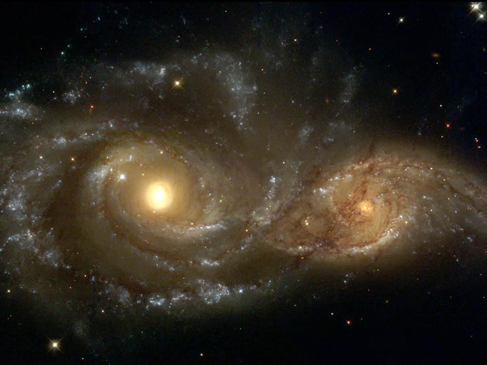
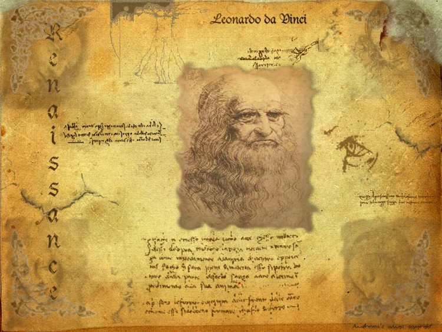

Vulgarisation
Vous vous posez des questions sur le fonctionnement de la nature. Vous vous intéressez à un sujet en particulier mais ne voulez pas vous embéter avec les mathématiques. Nos sujet de vulgarisation sont parfait pour vous.
Venez découvrir la vie et la mort des étoiles, la relativité, la physique quantique et de nombreux autre sujets sans devoir rentrer dans des calculs compliqués. Votre curiosité est le seul prérequis alors n'attendez pas et laissez vous tenter!

Cours
Vous êtes étudiant en physique, pationné par les sciences ou vous avez simplement déjà explorer nos sujets de vulgarisation et désirez aller plus loin alors n'hésitez pas et plongez dans nos cours de physique.
Ces derniers vont de sujets de base comme la mécanique à des sujets avancés utilisés tout les jours par des chercheurs en physique.

Histoire des Sciences
Notre connaissance de la physique n'a pas toujours été ce qu'elle est aujourd'hui. L'évolution des techniques et des concept est une façon pationnante de découvrir les sciences.
Dans cette catégorie vous découvrirez comment nos ancêtres on réussit à faire avancer la science avec des moyens rudimentaires parfois à contre courant des théories admises.
